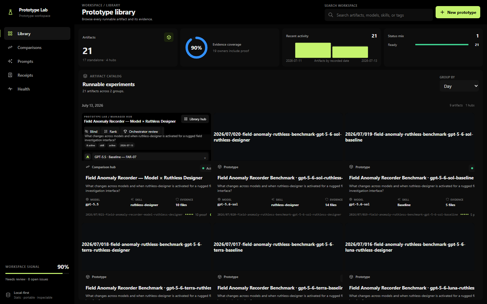
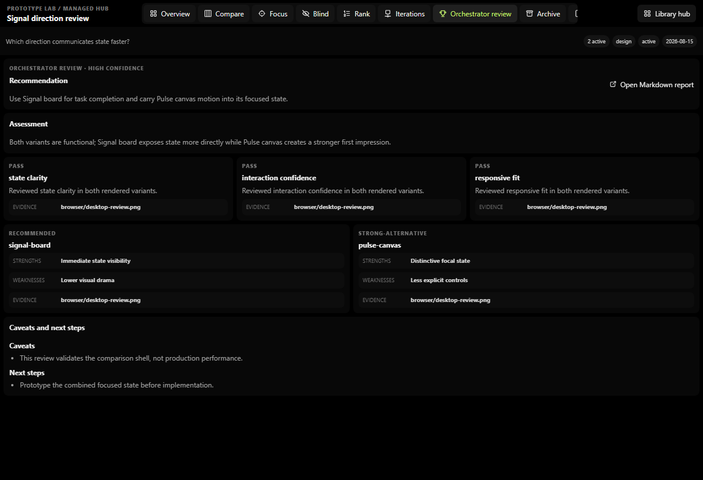
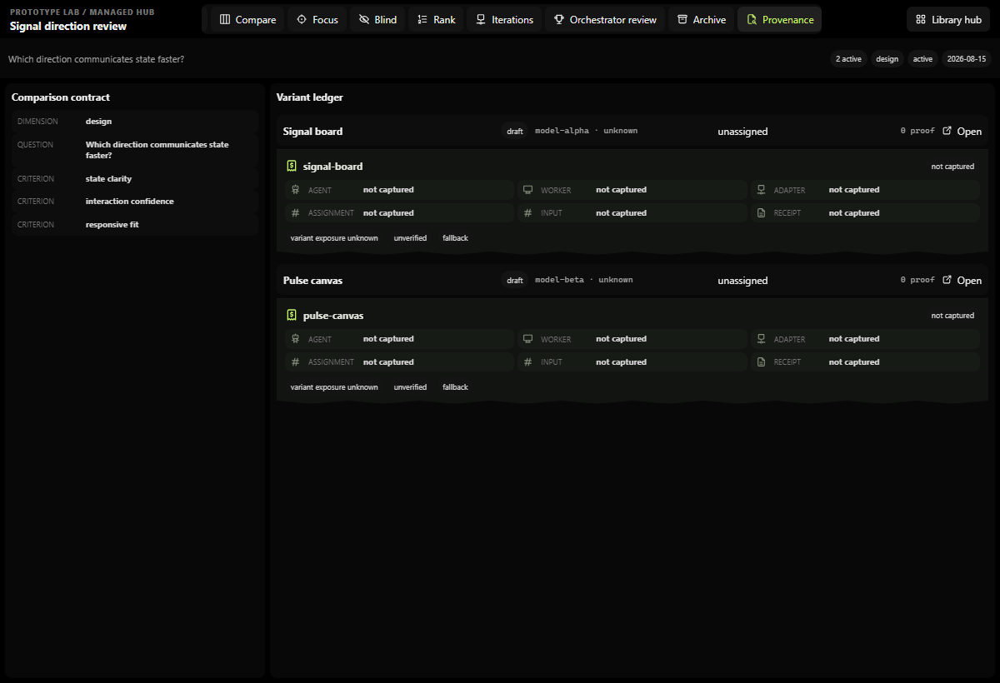
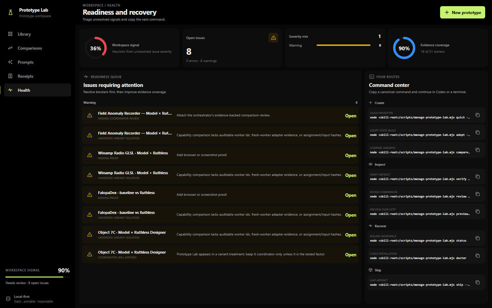

The browser shows the ledger,
not just the winner.




Local-first prototype operations · Agent Skill
Prototype, compare, inspect, and package standalone browser work without losing its owner, question, source, or proof.
Rendered system




The refusal
A hub can compare artifacts; it does not own their runtime. A package can carry evidence; it does not turn a draft into a production claim.